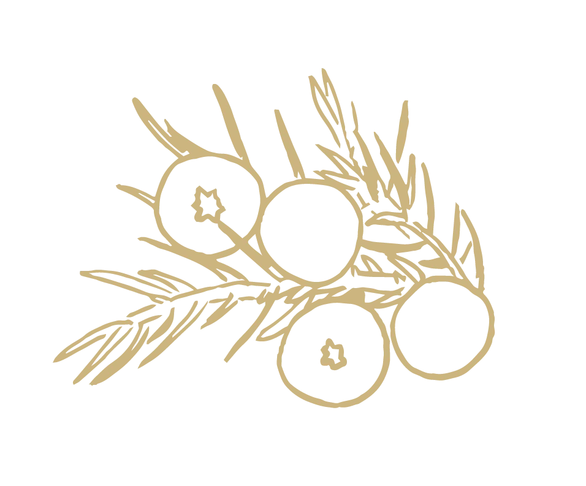
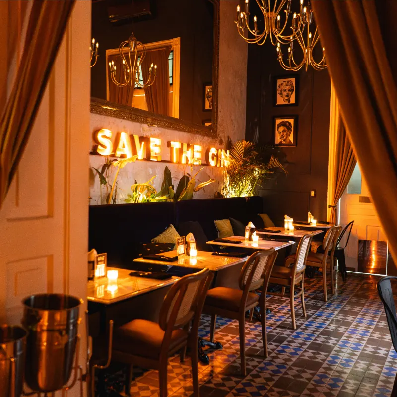
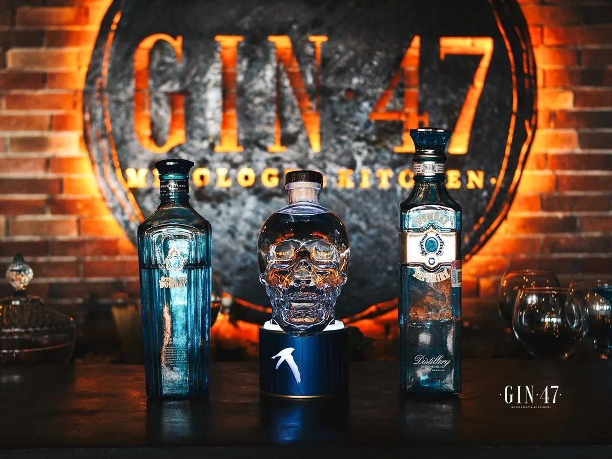

Chapter 01 — Origin
Here is where it all started.
In 2017 Mérida got its first bar devoted to a single spirit: gin.
Manifesto
“We are like a juniper berry, fruit of the beginning.”
From the Gin 47 menu
Every gin starts with the juniper berry: it is the one botanical a gin cannot leave out. Gin 47 chose it as its emblem because the bar was a beginning too, the first in the city to be built around this spirit.
The bar describes itself as a place where flavours, music, moments and people coexist: a multisensory space. In its current era it is called Gin 47 Mixology & Kitchen, and it sits in the Corredor Gastronómico of Mérida's historic centre, with a list of 51 gins and a kitchen that answers the bar.

Timeline
From a gin bar to Mixology & Kitchen.
- 2017
The first gin bar in Mérida
Gin 47 opens with a simple idea: one spirit, served with care, in many styles.
- The list
A library of gins
The back bar grows to 51 labels from 10 countries, from London Dry classics to Mexican gins such as Katún, made in Yucatán.
- The kitchen
Mixology & Kitchen
Food joins the drinks: entrees to share, burgers, pastas and tacos, many of them seasoned with xcatic chili and queso de bola.
- Today
Calle 47, Corredor Gastronómico
Calle 47 #459 between 52 and 54, Centro. Open every night from 5:00 pm.
What coexists here
Four things, one room.
The four parts of the bar's own manifesto. Open each one to see where it lives on this site.
01 Flavours
A kitchen menu built to pair with gin: truffle, citrus, xcatic and queso de bola. See the kitchen menu.
02 Music
Low light and a soundtrack that keeps the room moving late: until 2:00 am from Thursday to Saturday. Watch the room after dark.
03 Moments
A first gin & tonic, a birthday, a long dinner. Tell us the occasion when you book. Reserve a table.
04 People
Bartenders who will walk you through the list and suggest a gin for your taste. Start with the gin library.
The room
Chandeliers, tile and low light.


